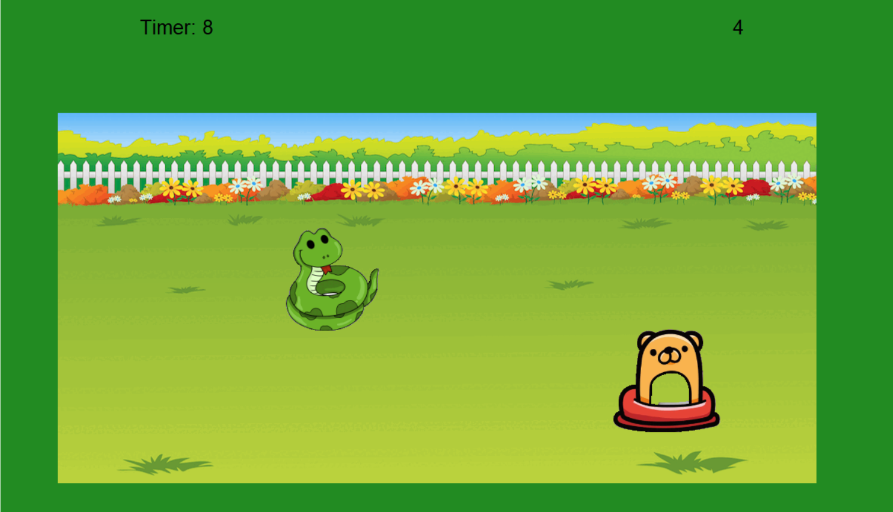
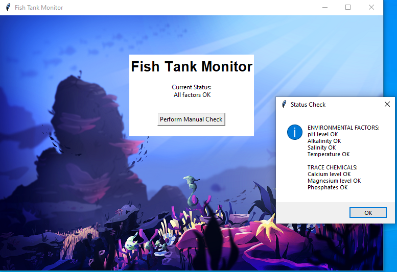

My partner and I made a game in which the user is asked various questions about how they would like their house to be customized. As the user answers each question, a turtle will draw the part of the house the user has specified, as well as doing so in any colors they may have chosen.
1.2.5 Project: Whac-A-Mole

My partner and I made a game in which the user has to click a mole while avoiding clicking a snake, both with shifting positions. If the mole is clicked the score goes up 1, if the snake is clicked, the score goes down 1.
Scratch Project: Minion Runner
My partner and I made a game in which the user uses WASD/Arrow keys in order to move a minion sprite forward all while avoiding obstacles.
2.1.6 Project: pHish Tank

My partners and I ran a fish tank program which had errors due to security. We fixed this by debugging and finding encryption errors.
3.1.6 Project: Rover Phone Home
My partners and I analyzed raw rover data collected collected for multiple different factors like light, wind, and sound. We determined the rover was on a desert plain from the data.